| plug-in overview |
| download vim.org |
| view on GitHub |
| C/C++ Support – Vim Plug-In | |||||||||
|
|
|
|||||||
|
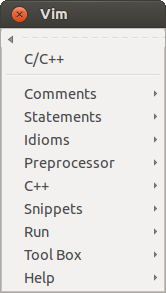 root menu |
C/C++ Support - Vim Plug-In( version 6.1.1 )View the ReadmeRead the C/C++ Support Help File The key mappings of this plugin (PDF) Plugin featured in the The Geek Stuff tutorial |
|
| FEATURES |
|---|
Speed-up the development of C/C++ programs:
|
| Menus | Explanation |
|---|---|
| 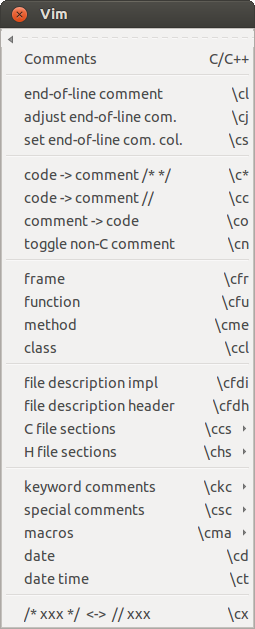 |
Menu Comments : insert comments |
| 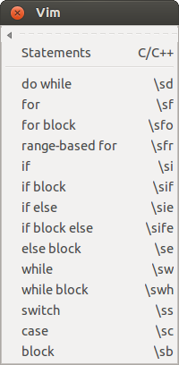 |
Menu Statements : insert statements |
| 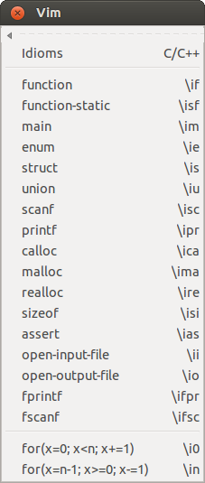 |
Menu Idioms : insert frequently used statements |
| 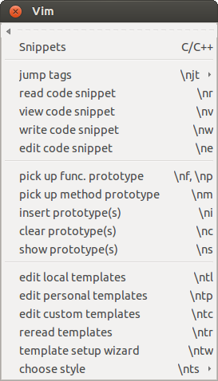 |
Menu Snippets : insert code snippets and manage templatesThe plug-in comes with a facility to extract, manage and insert often used code snippets. Visually select a few lines and use the menu entry write code snippet to write these lines into a file. The code snippet can then be edited and inserted again using read code snippet. (See :help csupport-snippets) The templates which define the behavior of most of the menu entries are also manage here. Use templates setup wizard to create a personalization file with your personal details for the comments. The templates support different coding styles. Use the entry choose style to switch between them. (See :help csupport-templates) Pick up function prototypes from one or more lines. Insert the prototypes elsewhere. Mark the following lines and choose pick up func. prototype: double f3_sub1 ( // comment comment comment /* */ double r1, /**/ // the first /* ssssss */ double r2 ) // the second Now mark these lines and choose pick up func. prototype again: int f4_sub1 ( int n1, /* multi line comment */ int n2, int n3 /* comment3 */ ) The following lines will be inserted by insert prototype(s): double f3_sub1 ( double r1, double r2 ); int f4_sub1 ( int n1, int n2, int n3 ); (See :help csupport-proto) |
| 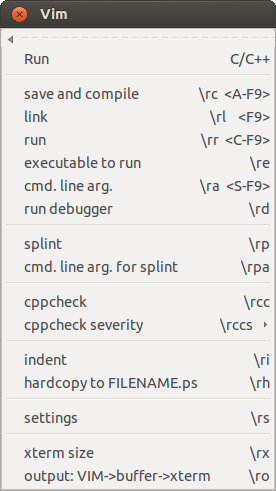 |
Menu Run : compile and run the program, start debugger, ...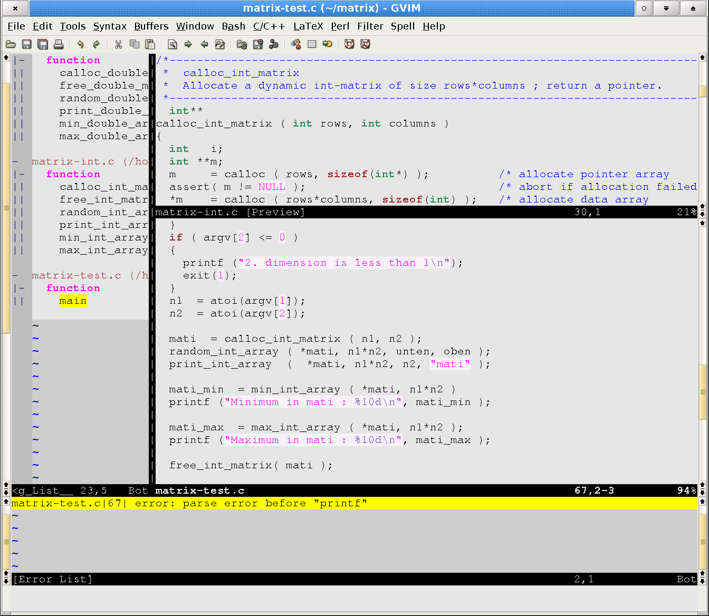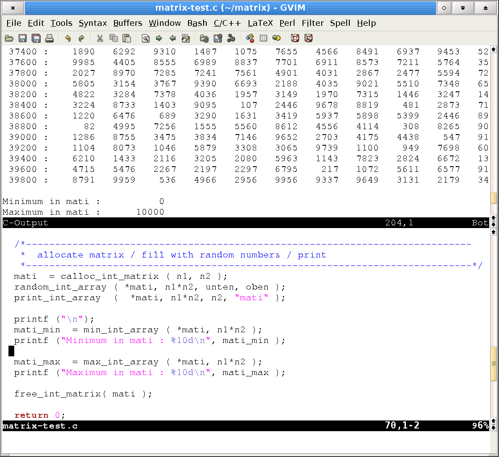 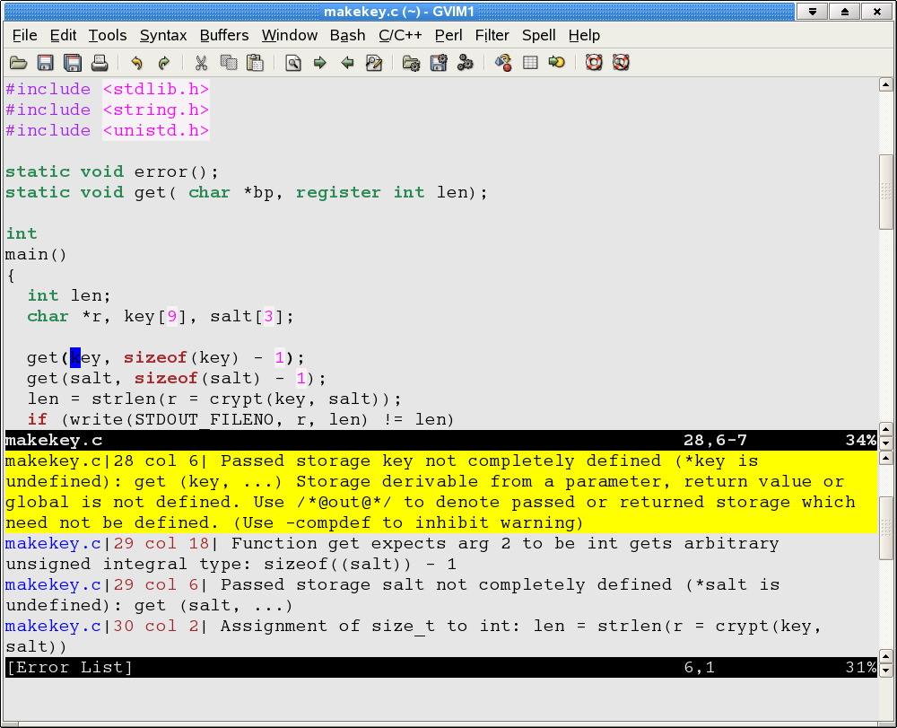 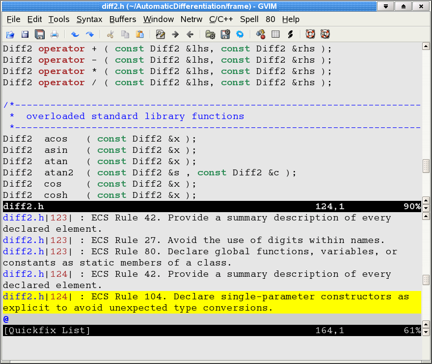 |
| 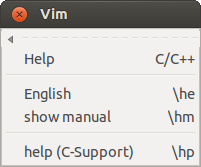 |
Menu Help : call helpHelp is quickly accessible through the Help menu. Place the cursor on the name of a function ...
strcpy ( p1, p2 );
then use the entry or the map \hm and the manpage will be displayed in a Vim buffer. The same works for any word in the English language. Placing the cursor on a word and hitting \he opens a dictionary for the word. |
 |
Toolbox Make : make integrationRun make in the current directory, passing cmd.-line arguments: :Make -j3 In larger projects a specific makefile can be chosen: :MakeFile ../Makefile... and run from anywhere: :Make docThe tool will change the directory and execute the previously chosen makefile, independently of the current working directory. |
Page updated: March 27 2016 / Mail to: Wolfgang Mehner
{kind=link}
{kind=link}
{kind=link}
{kind=link}